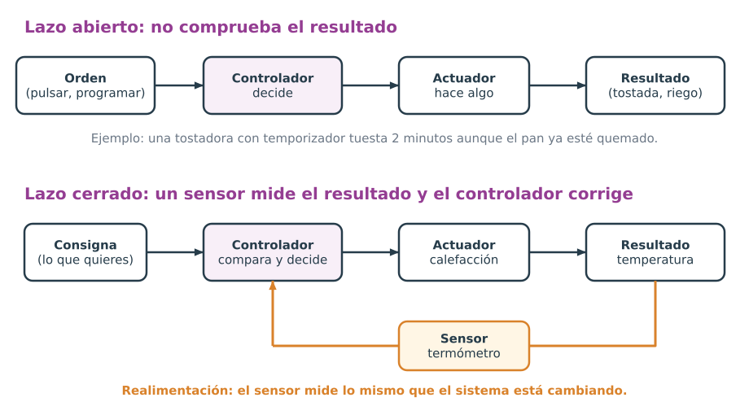
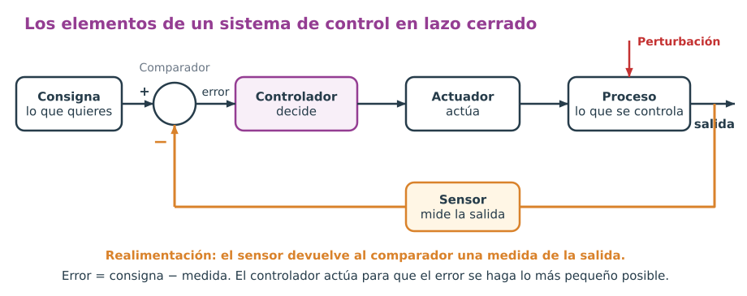
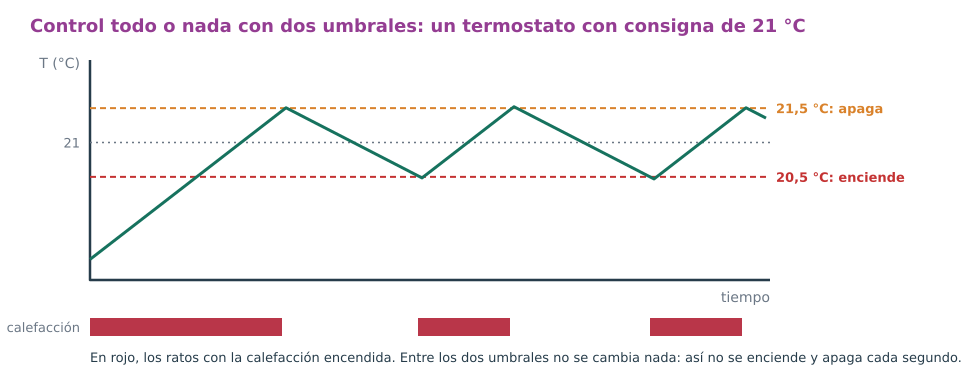

Qué vas a conseguir en esta página
Reconocer los elementos de cualquier sistema de control, distinguir un sistema en lazo abierto de uno en lazo cerrado y representar un sistema sencillo con un diagrama de bloques.
Un sistema de control es un conjunto de elementos que trabajan juntos para que una magnitud (una temperatura, una velocidad, un nivel de agua, una posición) se comporte como queremos, sin que una persona tenga que estar pendiente todo el tiempo. Hay sistemas de control en casi todo lo que te rodea: la cisterna del váter, la lavadora, el climatizador del coche, el ascensor o la farola de tu calle.
Las partes de un sistema de control
Para estudiar un sistema de control no hace falta saber cómo está fabricada cada pieza: basta con saber qué función cumple. Por eso se dibuja con un diagrama de bloques: cada bloque es una parte del sistema, y las flechas son las señales que van de una a otra.
Elementos de un sistema de control
| Elemento | Qué hace | Ejemplo en un climatizador |
|---|---|---|
| Consigna (o referencia) | El valor que queremos conseguir. | Los 21 °C que eliges en el mando. |
| Sensor (o transductor) | Mide la magnitud que se controla y la convierte en una señal eléctrica. | El termómetro del aparato. |
| Comparador | Resta la medida a la consigna. El resultado es la señal de error. | Calcula cuántos grados faltan o sobran. |
| Controlador | Decide qué hay que hacer a partir del error. | El circuito (o el programa) que manda encender o apagar. |
| Actuador | Ejecuta la orden y actúa sobre el proceso. | El compresor y el ventilador. |
| Proceso (o planta) | Aquello que se controla. | El aire de la habitación. |
| Perturbación | Lo que cambia la salida sin que el sistema lo haya decidido. | Abrir una ventana en invierno. |
Lazo abierto y lazo cerrado
La gran diferencia entre unos sistemas y otros es si comprueban o no el resultado de lo que hacen.

Lazo abierto
El sistema actúa siguiendo una orden o un tiempo fijado, sin medir si ha conseguido lo que se quería. Es sencillo y barato, pero no se corrige solo: si algo cambia, el resultado sale mal.
Ejemplos: una tostadora con temporizador (tuesta 2 minutos aunque el pan ya esté negro), una lavadora que siempre hace el mismo programa, un semáforo que cambia por tiempos o un aspersor que riega a una hora aunque esté lloviendo.
Lazo cerrado
Un sensor mide continuamente la salida y esa medida vuelve al comparador. A esto se le llama realimentación. El controlador actúa según el error, así que el sistema se corrige solo cuando aparece una perturbación.
Ejemplos: el termostato de una calefacción, la cisterna del váter (la boya mide el nivel y cierra el grifo), el control de velocidad de crucero de un coche o un riego que mide la humedad de la tierra y se para en cuanto está húmeda.

Fíjate en que la medida del sensor entra en el comparador restando. Por eso se habla de realimentación negativa: si la temperatura se pasa de la consigna, el error se vuelve negativo y el controlador hace lo contrario de lo que estaba haciendo. Así el sistema tiende siempre a acercarse a la consigna.
Modelizar un sistema sencillo
Modelizar un sistema es describirlo de forma simplificada para entender y predecir cómo se va a comportar. El primer paso siempre es el mismo: identificar sus elementos y dibujar el diagrama de bloques. El segundo es describir con precisión la regla que sigue el controlador.
La regla más sencilla es el control todo o nada: el actuador solo puede estar encendido o apagado. Un termostato de calefacción con consigna de 21 °C podría seguir esta regla: «si la temperatura es menor que 21 °C, enciende; si no, apaga». El problema es que, cuando la temperatura ronda los 21 °C, cualquier pequeña variación hace que la calefacción se encienda y se apague cada pocos segundos, y eso la estropea.
La solución es usar dos umbrales en lugar de uno, lo que se llama histéresis: la calefacción se enciende por debajo de 20,5 °C y se apaga por encima de 21,5 °C. Entre los dos valores no se cambia nada.

Esta misma regla es la que escribirás más adelante en tus programas de Arduino con if y else: el controlador de muchos sistemas reales es, precisamente, un programa.
Existen controladores más finos, como el proporcional, que no se limita a encender o apagar: actúa con más fuerza cuanto mayor es el error (un grifo que se abre más o menos según lo que falte para llenar el depósito). Lo verás con más detalle en segundo de Bachillerato.
Ahora tú: diagramas de bloques
No se entrega ni cuenta para la nota: sirve para comprobar si lo has entendido.
Para cada sistema, di si funciona en lazo abierto o en lazo cerrado e identifica su sensor (si lo tiene), su controlador y su actuador. Después dibuja su diagrama de bloques en tu cuaderno.
- Un riego que se pone en marcha cuando el sensor detecta que la tierra está seca y se para cuando ya está húmeda.
- Un microondas que calienta 90 segundos.
- La cisterna de un váter.
- Un horno que mantiene 180 °C.
Ver las soluciones
| Sistema | Lazo | Sensor | Controlador | Actuador |
|---|---|---|---|---|
| Riego | Cerrado | Sensor de humedad del suelo | Programa que compara la humedad con un umbral | La electroválvula o la bomba |
| Microondas | Abierto | Ninguno: no mide la temperatura de la comida | Temporizador | El magnetrón |
| Cisterna | Cerrado | La boya, que «mide» el nivel | El mecanismo de palanca | La válvula de entrada del agua |
| Horno | Cerrado | Termopar o sonda de temperatura | Termostato | La resistencia calefactora |
Para decidir si es lazo cerrado, pregúntate si el sensor mide justo lo que el actuador está cambiando: el riego moja la tierra y el sensor mide la humedad de esa tierra; el microondas calienta la comida y nadie la mide.
Lo que tienes que saber de esta página
- Un sistema de control hace que una magnitud se comporte como queremos, sin intervención continua de una persona.
- Sus elementos son la consigna, el sensor, el comparador, el controlador, el actuador y el proceso; las perturbaciones lo alteran desde fuera.
- En lazo abierto no se mide el resultado; en lazo cerrado sí, gracias a la realimentación, y el sistema se corrige solo.
- El control todo o nada con dos umbrales (histéresis) evita que el actuador se encienda y se apague sin parar.
- El diagrama de bloques es la forma de representar y modelizar un sistema de control.